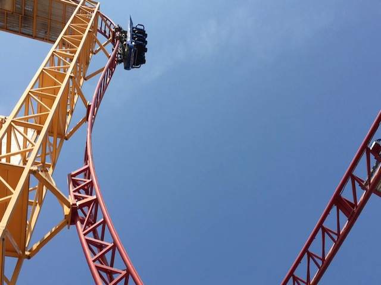
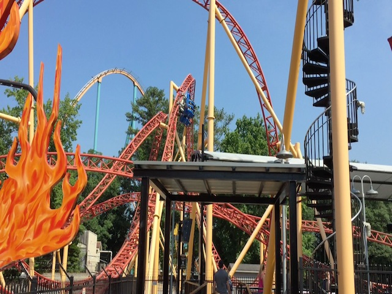
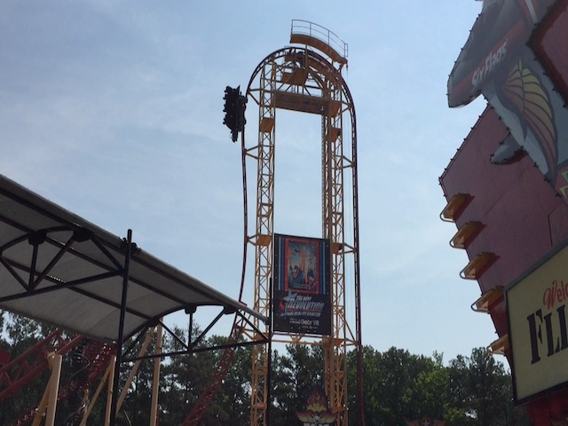
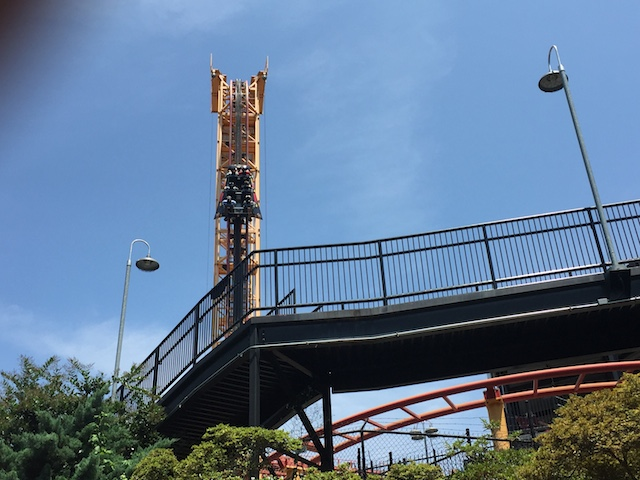
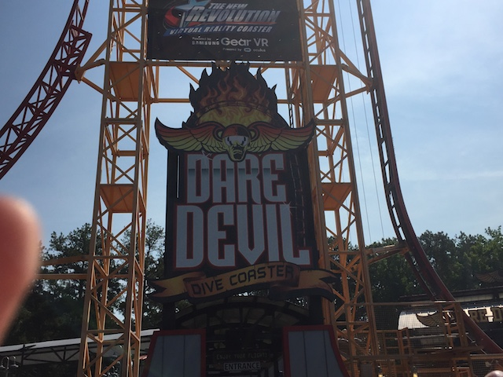

| |
Dare Devil Dive Review

For today's review, we are heading to Six Flags Over Georgia to review Dare Devil Dive. This is the parks Euro Fighter, and...it's an intersting ride. It's funny. It looks a lot bigger than most Euro Fighters. It has a lot more to it. The drop is bigger here, there are more inversions on this ride, and all that jazz. And yet...there's something...off about this ride. I'm not sure what, but something about this coaster just felt...stale and formuleic. Even though there are many literal clones at Six Flags Over Georgia, this one somehow feels the most generic of them all. And I'm not sure why this Eurofighter is that way. I don't have this issue with the other Eurofighters. So why does this one just feel so meh? Well, hop in the cars, pull down the lap bars, and away we go. OK, first off, thank you Six Flags Over Georgia. Thank you for having lap bars on this ride. These rides are ALWAYS better with lap bars. Luckily, I think lap bars on Eurofighters are now becoming the new norm. We roll around a big turn and climb up the vertical lifthill. I love these things. We eventually reach the top, and yeah. This ride has the Goliath effect. I honestly hate that. I think that's one thing that hurts the ride. Most Eurofighters will just yank you on down. But here, they slow you down, and really have it be a gradual up, over the top, and down the first drop. I know they do this so they can have slightly bigger trains that improve capacity (Wait a minute. After thinking about it, these cars are actually lower capacity than normal Eurofigher cars! Never mind! WTF!?). But yeah, the bigger cars and more spread out drop really takes away that whip I enjoy on the other Eurofighters, and really makes you notice going beyond 90 degrees. But it's still a fun first drop, giving us a decent amount of speed. Wave hello to the plastic flames that you don't even notice, but it's still nice that they attempted any theming, no matter how it turned out. It then takes us into a dive loop. It's pretty small, and while it doesn't provide a ton of force, it still is going fairly fast, and you just flip upsidedown, and then drop back down. We then head around a sort of curved hill. Nothing special or crazy about this part of the ride right here, but it's still fun. Not a ton of laterals, or anything like that, but I like it. We then head into an immelmann loop, and...it's fun. But, it doesn't really whip you upsidedown, or really makes you feel the forces. It looks tight, and agressive. But it's not. You just...sort of roll right through it. We then head up a curved hill, only to glide right into a mid course brake. Aww, I really don't like that. We had some good speed, and now that's reduced. Lame. =( We head down a small curved drop, and that at least gives us a little bit of our speed back. So we're still rolling. We coast through a small little hill, kind of banked, but yeah. There's no airtime here whatsoever. We head around a sort of slow turn, and hey. It's inside. TAKE THE TUNNEL!!!! We pop out, and go through an inline twist. OK, this is definetly my favorite part of the ride. You really feel hangtime throughout this part of the ride, and you can definetly tell that you're upsidedown for a few seconds. We then head down a small curve, up a tiny little thing, and glide right into the brake run. I know this ride looks impressive, but...something about it just doesn't feel super forceful. I don't know. Maybe I'm just harsher on this ride because it's at Six Flags Over Georgia and has some stiff competition, whereas other Eurofighters, not so much. But...even so, it just feels weaker for some reason. Like it just feels like a cookie cutter, insert generic inversions, and BAM! I know its not, there are Eurofighter clones, and this is an original ride. But something about this just...feels off. I know some might not be happy with me giving this opinion of the ride being not that great. It's not a bad ride at all. I liked it. It's fun. It's just one of the weaker Eurofighters. That's all.
7/10
Location: Six Flags Over Georgia
Opened: 2011
Built by: Gerstlauer
Last Ridden: June 27, 2016
Dare Devil Dive Photos




Home
|